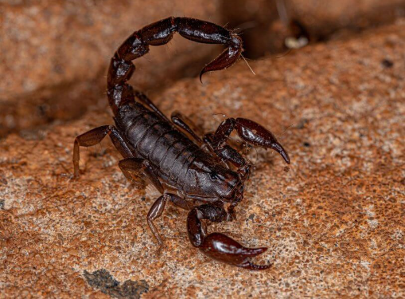

Tityus bahiensisIdentificação
O escorpião-marrom apresenta coloração predominantemente marrom, podendo variar entre tons castanhos claros e escuros, com corpo e cauda de aspecto uniforme.
Peçonhento?
Sim, possui peçonha e apresenta importância médica, podendo causar acidentes com dor intensa e outros sintomas que necessitam de atenção.
Importância ecológica
Desempenha papel importante no controle populacional de insetos e pequenos invertebrados, contribuindo para o equilíbrio ecológico.
A presença desse animal em áreas residenciais requer cuidado, evitando o contato direto e promovendo manejo seguro.